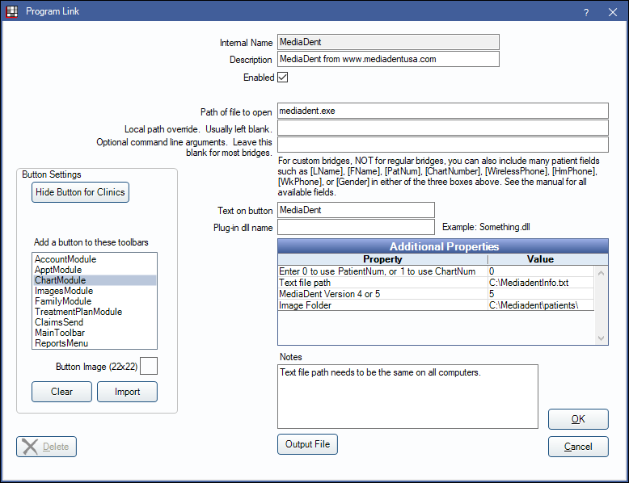

MediaDent Bridge
In the Main Menu, click Setup, Program Links. Double-click on MediaDent from www.mediadentusa.com.
MediaDent is an imaging software. Website: http://www.mediadentusa.com/. CADI Bridge is a re-branded version of MediaDent.
To enable the bridge:
- Check the Enabled box.
- Verify the Path of file to open.
- Double-click on a row in Additional Properties to change settings.
- Use the PatNum (enter 0) or ChartNum (enter 1) as the patient ID.
- Verify Text file path. Only used with version 5.
- Enter MediaDent version either 4 or 5.
- Verify Image Folder path. Only used with version 4.
- Set up a clickable bridge button.
- Under Add a button to these toolbars, highlight where to display the button.
- Enter the Text on button.
- (Optional) Import an image to show on the button (22 x 22 pixels).
- If using clinics, click Hide Button for Clinics. Select which clinics the button should display on.
- Click OK.